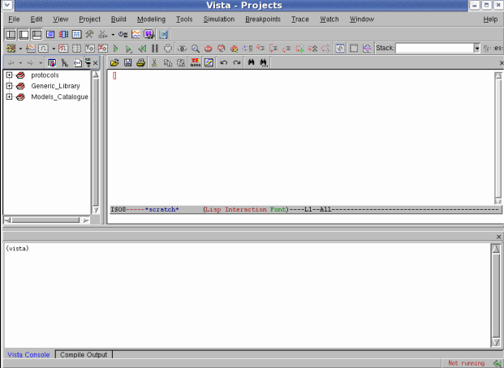

Vista Main Window
The main Vista window contains three panels:
The interface includes four main toolbars:
- Vista workflow toolbar: Pane toggles, Model creation (text editor or dialog-based), Block Diagram (Schematic) editor to assemble the models, Build/Add sc_main (SystemC entry point), Simulation, Analysis and Virtual Prototype creation. It is also possible to invoke Vista Power for bottom-up power and timing extraction, which provides a more accurate analysis derived from an implemented design.
- Simulation and Verification toolbar
When Vista is first invoked, two libraries are displayed in the Vista browser: Generic Library and Protocols.
Figure 3‑1.
Main Vista Window

The Vista Generic Library contains the generic models and core models that are provided with Vista.
The Protocol library lists all pre-defined communication protocols that are available.